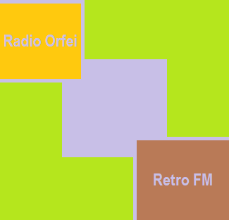

Страница 3
Навигация по сайту:
На главную
Страница 2
Навигация по странице:
ЛР №7. Использование слоев
ЛР №8. Использование графики и мультимедиа
ЛР №9. Использование таблиц верстки
Лабораторная работа №7. Использование слоев.
Лабораторная работа №8. Использование графики и мультимедиа.
Выполнение задания пункта 3.1

Выполнение задания пункта 3.2
Выполнение задания пункта 3.3
Выполнение задания пунктов 3.4 и 3.5
Выполнение задания пункта 3.6
К оглавлению

 Выполнение задания пунктов 3.4 и 3.5
Выполнение задания пункта 3.6
Выполнение задания пунктов 3.4 и 3.5
Выполнение задания пункта 3.6